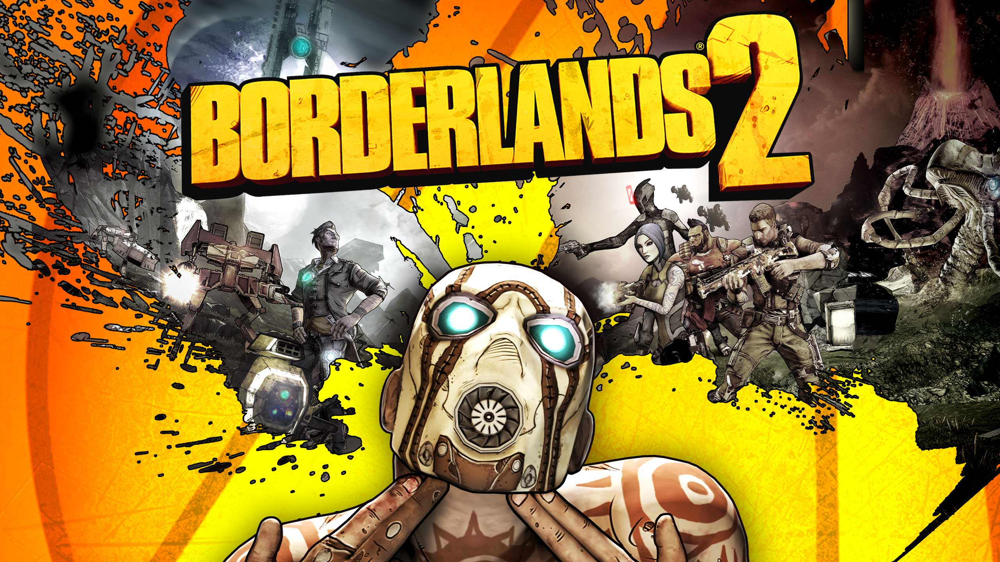
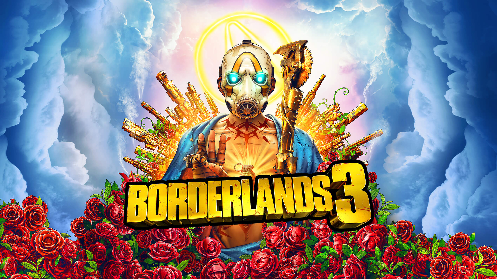
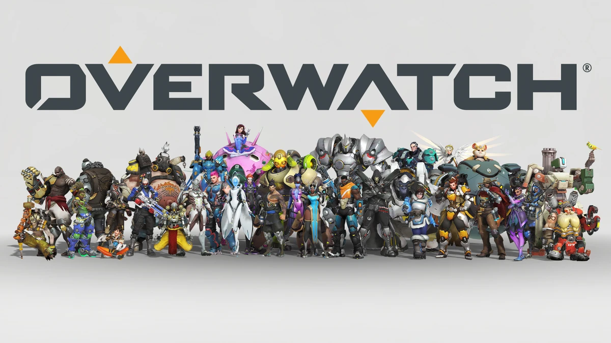
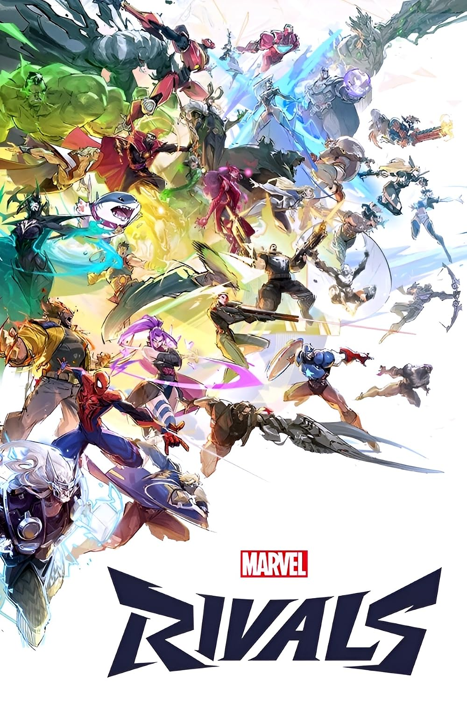
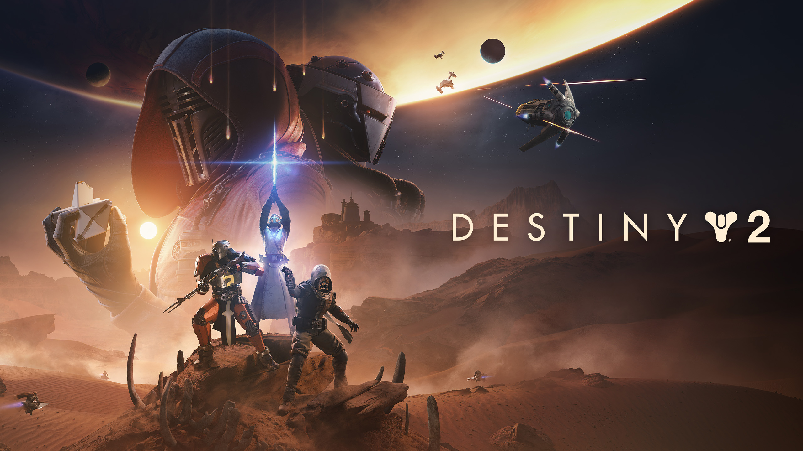

My Favorite Video Games
This is a collection of six of my favorite video games. I chose these games because they each stand out to me for different reasons, whether it is playing with friends, exploring large worlds, or just having fun. These are games that I have spent a lot of time playing and continue to enjoy.

Minecraft
Game | 2011 | Sandbox
Minecraft is one of my favorite games because there is always something different to do. I enjoy building, exploring, and playing with friends. The freedom to create whatever I want is what keeps me coming back to it.

Borderlands 2
Game | 2012 | Action RPG
Borderlands 2 is one of my favorite games because of its humor, characters, and huge variety of weapons. I especially enjoy playing through the game with friends and trying different characters and builds. It is a game that I can always come back to and still have fun.

Borderlands 3
Game | 2019 | Action RPG
Borderlands 3 is similar to Borderlands 2, but it feels upgraded in almost every way. There are more ways to create different builds, more weapons to experiment with, and a lot more gameplay. I enjoy trying different characters and finding new builds that completely change how I play.

Overwatch
Game | 2016 | Team-Based Shooter
Overwatch is one of my favorite games because every match feels different. I like the variety of heroes and how each one has their own abilities and playstyle. Playing with a team and switching heroes depending on the situation keeps the game fun even after playing it for a long time.

Marvel Rivals
Game | 2024 | Team-Based Shooter
Marvel Rivals is one of my favorite games because I enjoy the fast paced team fights and the variety of Marvel characters. Each character has different abilities and playstyles, which gives me plenty of options to try. I also enjoy playing with friends and learning how different characters work together as a team.

Destiny 2
Game | 2017 | Action Shooter
Destiny 2 is one of my favorite games because there is always something to work toward. I enjoy getting new weapons and armor, creating different builds, and playing activities with friends. The mix of shooting, abilities, and character customization gives me a lot of different ways to play.